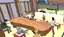
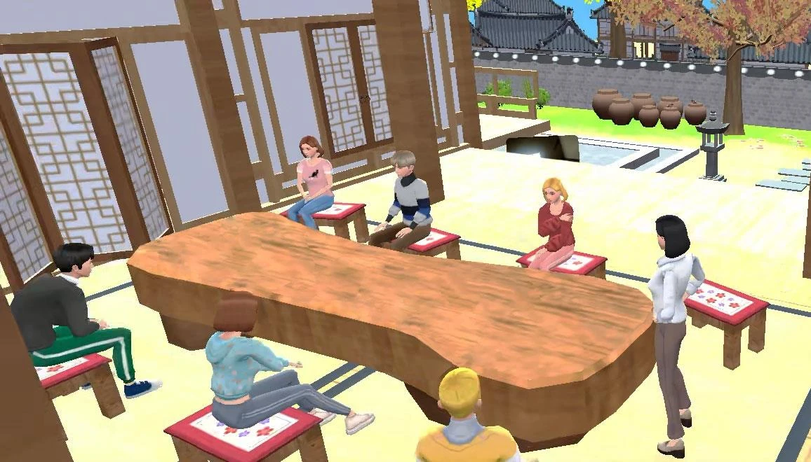

실제 환경에서 검증된기술 적용 사례
인식 시스템부터 디지털 환경, 공간 미디어, 시뮬레이션까지 확장된 수행 이력을 소개합니다.
SCO 노아의 방주 프로젝트
IN PROGRESS · 2025–2026
리본소프트는 현재 SCO 노아의 방주 프로젝트에 참여하고 있습니다. 프로젝트는 대규모 문화·체험 공간을 대상으로 콘텐츠, 디지털 시스템, 인터랙션 기술과 실제 공간 환경을 연결하는 방향으로 개발 및 협의가 진행되고 있습니다.
리본소프트는 프로젝트와 관련한 현장 시찰과 실무 협의를 진행하고 있으며, 공간 안에서 방문자가 경험하게 될 디지털 콘텐츠와 인터랙티브 시스템의 적용 방향을 검토하고 있습니다. 대규모 공간을 구성하는 콘텐츠와 미디어, 사용자 인터랙션, 디지털 시스템이 서로 연계될 수 있도록 프로젝트의 기술적·경험적 구조를 검토하는 단계입니다.
현재 공개 가능한 자료에는 프로젝트 관련 현장 시찰 기록과 SCO 관련 공개 자료가 포함되어 있습니다. 해당 자료는 프로젝트 개발 과정에서 이루어진 현장 활동과 협의 내용을 기록한 자료로 활용됩니다.


프로젝트는 현재 진행 단계에 있으며 최종 설계, 확정 부지, 건설 승인 또는 공사 착수를 의미하지 않습니다. 향후 승인된 기획·콘셉트 자료가 확보될 경우 프로젝트의 공간 구성과 경험 방향을 설명하는 자료로 함께 활용할 예정입니다.
주요 프로젝트 경험


옌청 자동차 테마파크
곡면 스크린 디스플레이와 레이싱 시뮬레이션 콘텐츠 구현에 참여했습니다.


홍대 VR 경험 공간
VR 공간 내 곡면 스크린 비주얼 구현을 수행했습니다.


FIT-M
AI 동작인식 기반 환자 운동능력 측정 서비스를 공동 개발했습니다.


하나은행 얼굴인식 출입보안 솔루션
리본소프트의 얼굴인식 출입보안 기술이 기업 환경에 적용된 사례입니다.


현대건설 발표 환경
대규모 발표 공간의 곡면 스크린 디스플레이를 구현했습니다.


7 Cubic
아바타와 커뮤니케이션 기능을 갖춘 3D 디지털 환경 플랫폼입니다.
Cityfield Theme Park
Digital Twin과 VR·AR, 시뮬레이터 체험 시스템 공급·설치 계약을 체결했습니다.
기술 적용 범위의 확장
- 01RECOGNITION인식
- 02MOTION & TRACKING동작 · 추적
- 03DIGITAL ENVIRONMENT디지털 환경
- 04SPATIAL MEDIA & SIMULATION공간 미디어 · 시뮬레이션
- 05INTEGRATED EXPERIENCE
개발 제품 및 시스템 이력
지능형 시스템
- Reborn Face 3D2019
- Reborn Face 2D2019
- Reborn Vision2019
- Reborn Motion2020
- Reborn Tracking2020
- AI Unmanned Service2020
- AI HYPER VISIONCERTIFIED · 2021
디지털 환경 개발
- WeWorldBETA · 2021
- Meta CampusCBT · 2022
- 7 CubicRELEASED · 2022
- Avatar / Digital TwinDEVELOPMENT


협력 및 계약 이력
기술 적용을 뒷받침하는 검증 이력


KISA AI HYPER VISION Ver1.0
지능형 CCTV 솔루션 성능인증
AI·ICT 특허
AI 및 ICT 분야 등록 특허 6건
연구·기업 기반
기업부설연구소 · 벤처기업 · TCB T3